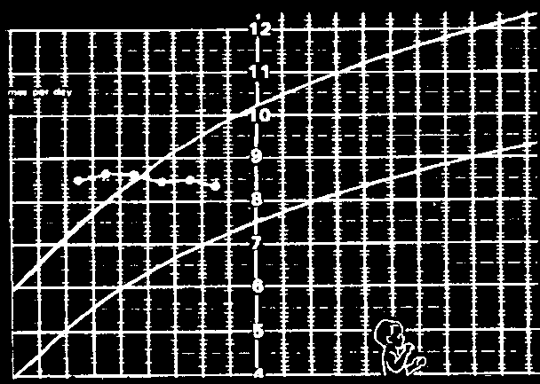
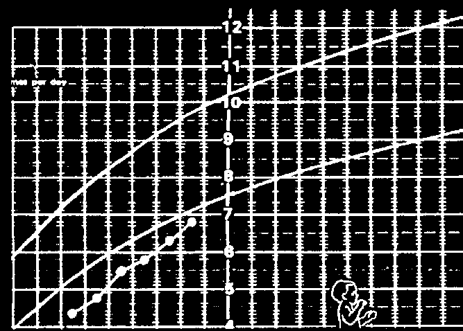
A malnourished, sickly child may have a chart like the one below. Notice that the line of dots (his weight) is below the Road to Health. The line of dots is also irregular and does not rise much. This shows the child is in danger.
Typical chart of
THE UNDERWEIGHT
OR MALNOURISHED
CHILD
Dots show that the child has not been gaining weight well, and during the last months has lost weight.
A child with a chart like the one above is seriously underweight. Perhaps he is not getting enough food. Or perhaps he has a disease like tuberculosis or malaria. Or both. He should be given more energy-rich foods more often. He should also be checked or tested for possible illnesses, and visit a health worker frequently until his chart shows he is gaining weight well.
IMPORTANT: Watch the direction of the line of dots.
The direction of the line of dots tells more about the child’s health than whether the dots are inside or below the two curved lines. For example:
DANGER! This child is not gaining weight.
Although the dots for this child are within the curved lines. the
WATCH THE DIRECTION
child has not been
OF THE LINE SHOWING THE CHILD’S GROWTH
gaining weight well for several months.
GOOD
Child growing well
DANGER
GOOD! This child is gaining weight well.
Not gaining weight
Although the dots for find out why this child are below the
VERY DANGEROUS
2 curved lines, their
Losing weight.
May be ill;
upward direction shows needs extra care the child is growing well. Some children are naturally smaller than others. Perhaps this child’s parents are also smaller than average.

A TYPICAL CHILD HEALTH CHART SHOWING A CHILD’S PROGRESS:
This baby was
At 6 months, the mother
At 10 months he
When the child was healthy and gained became pregnant developed chronic
13 months old, his mother weight well for the again and stopped diarrhea and began learned about ways to give first 6 months of breastfeeding him. The losing weight. He the child enough good food, life, because his baby was fed little more became very thin even without a lot of money mother breastfed than corn and rice. He and sick.
or land. He began gaining him.
stopped gaining weight.
weight fast. By age 2 he was back on the Road to Health.
breast poorly fed fed diarrhea well fed good weight good gain weight poor weight gain weight loss gain off breast diarrhea begins nutritious feeding at 6 months at 10 months begins at 13 months
Child Health Charts are important. When used correctly, they help mothers know when their children need more nutritious food and special attention. They help health workers better understand the needs of the child and his family. They also let the mother know when she is doing a good job.
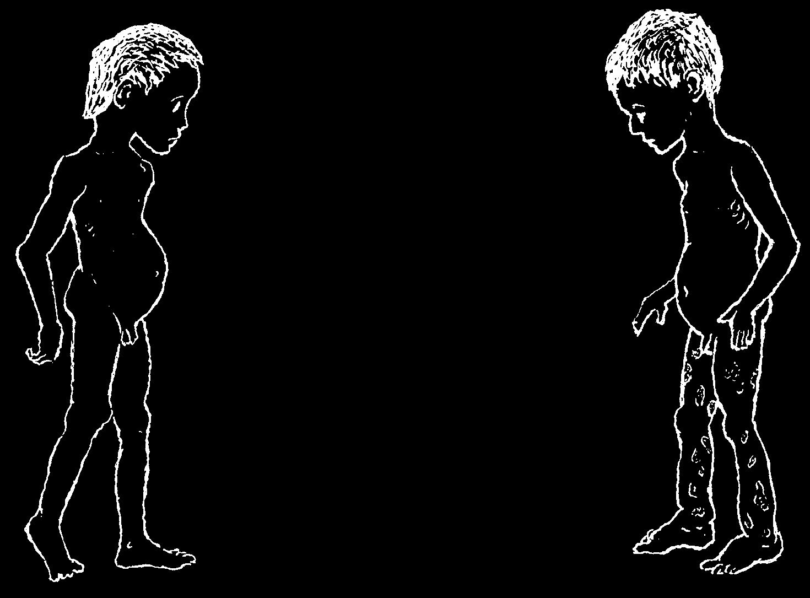
REVIEW OF CHILDREN’S HEALTH PROBLEMS DISCUSSED IN OTHER CHAPTERS
Many of the sicknesses discussed in other chapters of this book are found in children. Here some of the more frequent problems are reviewed in brief. For more information on each problem, see the pages indicated.
For special care and problems of newborn babies, see p. 270 to 275, and p. 405.
remember: In children, sicknesses often become serious very quickly. An illness that takes days or weeks to severely harm or kill an adult may kill a small child in hours. So, it is important to notice early signs of sickness and attend to them right away.
Malnourished Children
Many children are malnourished because they do not get enough to eat. Or if they eat mainly foods with a lot of water and fiber in them, like cassava, taro root, or maize gruel, their bellies may get full before they get enough energy food for their bodies’ needs. Also, some children may lack certain things in their food, like Vitamin
A (see p. 226) or iodine (see p. 130). For a fuller discussion of the foods children need, read Chapter 11, especially pages 120 to 122.
THESE TWO CHILDREN ARE MALNOURISHED
NOT VERY SERIOUS
SERIOUS
small sad underweight underweight (he may gain weight for a while because of swelling)
big belly thin arms dark spots, peeling skin, or and legs open sores swollen feet


Malnutrition may cause many different problems in children, including:
In mild cases:
In more serious cases:
• slower growth
• little or no weight gain
• swollen belly
• swelling of feet (sometimes face also)
• thin body
• dark spots, 'bruises’, or open peeling
• loss of appetite sores
• loss of energy
• thinness or loss of hair
• paleness (anemia)
• lack of desire to laugh or play
• desire to eat dirt (anemia)
• sores inside mouth
• sores in corners of mouth
• failure to develop normal intelligence
• frequent colds and other
• 'dry eyes’ (xerophthalmia)
infections
• blindness (p. 226)
• night blindness
Severe forms of general malnutrition are 'dry malnutrition’ or marasmus, and
'wet malnutrition’ or kwashiorkor. Their causes and prevention are discussed on p. 112 and 113.
Signs of malnutrition are often first seen after an acute illness like diarrhea or measles. A child who is sick, or who is getting well after a sickness, has an even greater need for enough good food than a child who is well.
Prevent and treat malnutrition by giving your children ENOUGH TO EAT and by feeding them MORE OFTEN. Add some high energy food, such as oil or fat, to the main food the child eats. Also try to add some body-building and protective foods like beans, lentils, fruits, vegetables, and if possible, milk, eggs, fish or meat.
Diarrhea and Dysentery
(For more complete information see p. 153 to 160.)
The greatest danger to children with diarrhea is dehydration, or losing too much liquid from the body. The danger is even greater if the child is also vomiting. Give
Rehydration Drink (p. 152). If the child is breastfeeding, continue giving breast milk, but give Rehydration Drink also.
The second big danger to children with diarrhea is malnutrition. Give the child nutritious food as soon as he will eat.
Fever (see p. 75)
In small children, high fever (over 39°) can easily cause seizures. To lower fever, take the clothes off the child. If she is crying and seems unhappy, give her acetaminophen (paracetamol) or ibuprofen in the right dosage (see p. 379), and give her lots of liquids. If she is very hot and shaky, wet her with cool (not cold) water and fan her. Also try to find the cause of the fever and treat it.
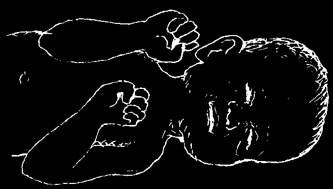
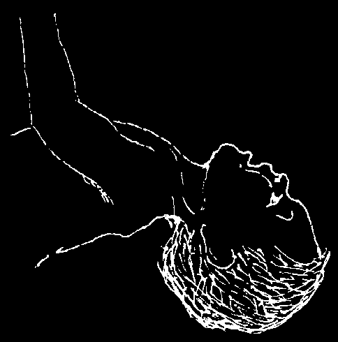
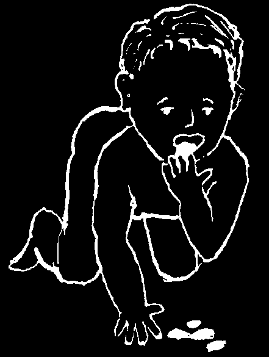
Seizures (Fits, Convulsions) (see p. 178)
Common causes of seizures or convulsions in children are high fever, dehydration, epilepsy, malaria, and meningitis. If fever is high, lower it rapidly (see p. 76). Check for signs of dehydration
(p. 151), malaria (p. 186), and meningitis (p. 185).
Seizures that come suddenly without fever or other signs are probably epilepsy (p. 178), especially if the child seems well between them. Seizures or spasms in which first the jaw and then the whole body become stiff may be tetanus (p. 182).
Meningitis (see p. 185)
This dangerous disease may come as a complication of measles, mumps, or another serious illness. Children of mothers who have tuberculosis may get tubercular meningitis. A very sick child who lies with his head tilted way back, whose neck is too stiff to bend forward, and whose body makes strange movements (seizures) may have meningitis.
Anemia (see p. 124)
Common signs in children:
• pale, especially inside eyelids, gums, and fingernails
• weak, tires easily
• likes to eat dirt
Common causes:
• diet poor in iron (p. 124)
• chronic gut infections (p. 145)
• hookworm (p. 142)
• malaria (p. 186)
Prevention and Treatment:
♦ Eat iron-rich foods like meat and eggs. Beans, lentils, groundnuts (peanuts), and dark green vegetables also have some iron.
♦ Treat the cause of anemia—and do not go barefoot if hookworm is common.
♦ If you suspect hookworm, a health worker may be able to look at the child’s stools under a microscope. If hookworm eggs are found, treat for hookworm
(p. 373 to 375).
♦ If necessary, give iron salts by mouth (ferrous sulfate, p. 392).
CAUTION: Do not give iron tablets to a baby or small child.
They could poison her. Instead, give iron as a liquid.
Or crush a tablet into powder and mix it with food.
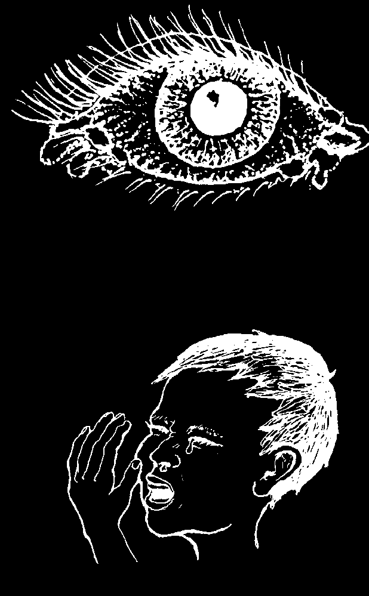

Worms and Other Parasites of the Gut (see p. 140)
If one child in the family has worms, all the family should be treated.
To prevent worm infections, children should:
♦ Observe the Guidelines of Cleanliness (p. 133).
♦ Use latrines.
♦ Never go barefoot.
♦ Never eat raw or partly raw meat or fish.
♦ Drink only boiled or pure water.
Skin Problems (see Chapter 15)
Those most common in children include:
• scabies (p. 199)
• infected sores and impetigo (p. 201 and 202)
• ringworm and other fungus infections (p. 205)
To prevent skin problems, observe the Guidelines of
Cleanliness (p. 133).
♦ Bathe and delouse children often.
♦ Control bedbugs, lice, and scabies.
♦ Do not let children with scabies, lice, ringworm, or infected sores play or sleep together with other children. Treat them early.
Pink Eye (Conjunctivitis) (see p. 219)
Wipe the eyelids clean with a clean wet cloth several times a day. Put an antibiotic eye ointment
(p. 378) inside the eyelids 3 or 4 times a day. Do not let a child with pink eye play or sleep with others. If he does not get well in a few days, see a health worker.
Colds and the 'Flu’ (see p. 163)
The common cold, with runny nose, mild fever, cough, often sore throat, and sometimes diarrhea is a frequent but not a serious problem in children.
Treat with lots of liquids. Give acetaminophen (see p. 379). Let children who want to stay in bed do so.
Good food and lots of fruit help children avoid colds and get well quickly.
Penicillin, tetracycline, and other antibiotics do no good for the common cold or 'flu’. Injections are not needed for colds.
If a child with a cold becomes very ill, with high fever and shallow, rapid breathing, he may be getting pneumonia (see p. 171), and antibiotics should be given. Also watch for an ear infection (next page) or 'strep throat’ (p. 310).
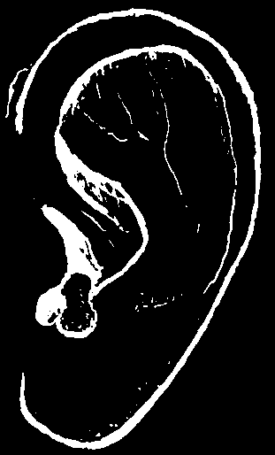

HEALTH PROBLEMS OF CHILDREN NOT DISCUSSED IN OTHER CHAPTERS
Earache and Ear Infections
Ear infections are common in small children. The infection often begins after a few days with a cold or a stuffy nose. The fever may rise, and the child often cries or rubs the side of his head. Sometimes pus can be seen in the ear. In small children an ear infection sometimes causes vomiting or diarrhea. So pus when a child has diarrhea and fever, be sure to check his ears.
Treatment:
♦ An ear infection may be very painful. But if the child is generally healthy, the infection usually goes away on its own. Give acetaminophen (p. 379) for pain.
♦ If the child is already in poor health, or if the ear infection does not go away after a few days, or if there is pus or blood, give cotrimoxazole (p. 357) or amoxicillin (p. 352). Always give antibiotics to a baby 6 months or younger with an ear infection.
♦ Carefully clean pus out of the ear with cotton, but do plug the ear with cotton, a stick, leaves, or anything else. Children with pus coming from an ear should bathe regularly but should not swim for at least 2 weeks after they are well.
Prevention:
♦ Teach children to wipe but not to blow their noses when they have a cold.
♦ Do not bottle feed babies—or if you do, do not let baby feed lying on his back, as the milk can go up his nose and lead to an ear infection.
♦ When children’s noses are plugged up, use salt drops and suck the mucus out of the nose as described on p. 164.
Infection in the ear canal:
To find out whether the canal or tube going into the ear is infected, gently pull the ear. If this causes pain, the canal is infected. Put drops of water with vinegar in the ear 3 or 4 times a day. (Mix 1 spoon of vinegar with 1 spoon of boiled water.) If there is fever or pus, also use an antibiotic.
Sore Throat and Inflamed Tonsils
These problems often begin with the common cold. The throat may be red and hurt when the child swallows. The tonsils
(two lymph nodes seen as lumps on each side at the back of the throat) may become large, painful or drain pus. Fever may reach 40°.
Treatment:
♦ Gargle with warm salt water (1 teaspoon of salt in a glass of water).
♦ Take acetaminophen for pain.
♦ Be sure the child drinks enough, even if it hurts to swallow. Try giving tea or watered down fruit juice.
If pain and fever come on suddenly or continue for more than 3 days, see the following page.
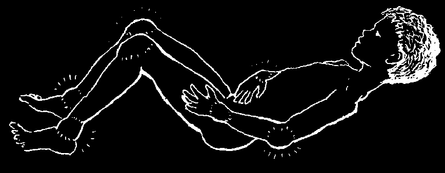
Sore throat and the danger of rheumatic fever:
For the sore throat that often comes with the common cold or flu, antibiotics should usually not be used and will do no good. Treat with gargles and acetaminophen.
However, one kind of sore throat—called strep throat—should be treated with penicillin. It is most common in children and young adults. It usually begins suddenly with severe sore throat and high fever, often without signs of a cold or cough. The back of the mouth and tonsils become very red, and the lymph nodes under the jaw or in the neck may become swollen and tender.
Give penicillin (p. 350) for 10 days. If penicillin is given early and continued for
10 days, there is less danger of getting rheumatic fever. A child with strep throat should eat and sleep far apart from others, to prevent their getting it also.
Rheumatic Fever
This is a disease of children and young adults. It usually begins 1 to 3 weeks after the person has had a strep throat (see above).
Principal signs (usually only some of these signs are present):
• fever
• joint pain, especially in the wrists and ankles, later the knees and elbows. Joints become swollen, and often hot and red.
• curved red lines or lumps under the skin
• uncontrolled movements
• in more serious cases, weakness, shortness of breath, and perhaps chest pain
Treatment:
♦ If you suspect rheumatic fever, see a health worker. There is a risk that the heart may become damaged.
♦ Give penicillin (see p. 350).
♦ Take aspirin in large doses (p. 378). A 12-year-old can take up to 2 tablets of
300 mg. 4 times a day. Take them together with milk or food to avoid stomach pain. If the ears begin to ring, take less.
Prevention:
♦ To prevent rheumatic fever, treat 'strep throat’ early with penicillin—for 10 days.
♦ To prevent return of rheumatic fever, and added heart damage, a child who has once had rheumatic fever should take penicillin for 10 days at the first sign of a sore throat. If he already shows signs of heart damage, he should take penicillin on a regular basis or have monthly injections of benzathine penicillin (p. 351)
perhaps for the rest of his life. Follow the advice of an experienced health worker or doctor.
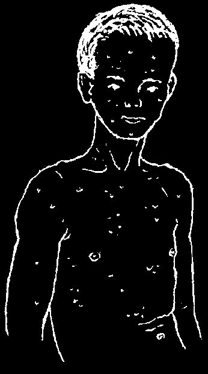

INFECTIOUS DISEASES OF CHILDHOOD
Chickenpox
This mild virus infection begins 2 to 3 weeks after a child is exposed to another child who has the disease.
Signs:
spots.
blisters, and scabs
First many small, red, itchy spots appear. These turn into little pimples or blisters that pop and finally form scabs. Usually they begin on the body, and later on the face, arms, and legs. There may be spots, blisters, and scabs, all at the same time.
Fever is usually mild.
Treatment:
The infection usually goes away in a week. Bathe the child daily with soap and warm water. To calm itching, apply cool cloths soaked in water from boiled and strained oatmeal. Cut fingernails very short. If the scabs get infected, keep them clean. Apply hot, wet compresses, and put an antibiotic ointment on them. Try to keep the child from scratching.
Measles
This severe virus infection is especially dangerous in children who are poorly nourished or have tuberculosis. Ten days after being near a person with measles, it begins with signs of a cold—fever, runny nose, red sore eyes, and cough.
The child becomes increasingly ill. The mouth may become very sore and he may develop diarrhea.
After 2 or 3 days a few tiny white spots like salt grains appear in the mouth. A day or 2 later the rash appears—first behind the ears and on the neck, then on the face and body, and last on the arms and legs. After the rash appears, the child usually begins to get better. The rash lasts about 5 days. Sometimes there are scattered black spots caused by bleeding into the skin ('black measles’). This means the attack is very severe. Get medical help.
Treatment:
♦ The child should stay in bed, drink lots of liquids, and be given nutritious food.
If she cannot swallow solid food, give her liquids like soup. If a baby cannot breastfeed, give breast milk in a spoon (see p. 120).
♦ If possible, give vitamin A to prevent eye damage (p. 391).
♦ For fever and discomfort, give acetaminophen (or ibuprofen).
♦ If earache develops, give an antibiotic (p. 350).
♦ If signs of pneumonia, meningitis, or severe pain in the ear or stomach develop, get medical help.
♦ If the child has diarrhea, give Rehydration Drink (p. 152).


Prevention of measles:
Children with measles should keep far away from other children, even from brothers and sisters. Especially try to protect children who are poorly nourished or who have tuberculosis or other chronic illnesses. Children from other families should not go into a house where there is measles. If children in a family where there is measles have not yet had measles themselves, they should not go to school or into stores or other public places for 10 days.
To prevent measles from killing children, make sure all children are well-nourished. And have your children vaccinated against measles.
German Measles
German measles are not as severe as regular measles. They last 3 or 4 days.
The rash is mild. Often the lymph nodes on the back of the head and neck become swollen and tender. There is often a low fever.
The child should stay in bed and take acetaminophen or ibuprofen if necessary.
Women who get German measles in the first 3 months of pregnancy may give birth to a child with a disability. For this reason, pregnant women who have not yet had
German measles—or are not sure—should keep far away from children who have this kind of measles. Girls or women who are not pregnant can try to catch German measles before they get pregnant. A vaccine exists for German measles, but is not often available.
Mumps
The first symptoms begin 2 or 3 weeks after being exposed to someone with mumps.
Mumps begin with fever and pain on opening the mouth or eating. In 2 days, a soft swelling appears below the ears at the angle of the jaw. Often it comes first on one side, and later on the other side.
Treatment:
The swelling goes away by itself in about 10 days, without need for medicine.
Acetaminophen or ibuprofen can be taken for pain and fever. Feed the child soft, nourishing foods and keep his mouth clean.
Complications:
In adults and children over 11 years of age, after the first week there may be pain in the belly or a painful swelling of the testicles in men. Persons with such swelling should stay quiet and put ice packs or cold wet cloths on the swollen parts to help reduce the pain and swelling.
If signs of meningitis or hearing problems appear, get medical help (p. 185).


Whooping Cough
Whooping cough begins a week or two after being exposed to a child who has it. It starts like a cold with fever, a runny nose, and cough.
Two weeks later, the whoop begins. The child coughs rapidly many times without taking a breath, until she coughs up a plug of sticky mucus, and the air rushes back into her lungs with a loud whoop. While she is coughing, her lips and nails may turn blue for lack of air. After the whoop, she may vomit. Between coughing spells the child seems fairly healthy.
Whooping cough often lasts 3 months or more.
Whooping cough is especially dangerous in babies under 1 year of age, so vaccinate children early. Small babies do not develop the typical whoop so it is hard to be sure if they have whooping cough or not. If a baby gets fits of coughing and swollen or puffy eyes when there are cases of whooping cough in your area, treat her for whooping cough at once.
Treatment:
♦ Antibiotics are helpful only in the early stage of whooping cough, before the whoop begins. It is especially important to treat babies under 6 months at the first sign. Use erythromycin (p. 354). If you do not have erythromycin, try cotrimoxazole (p. 357), but only use cotrimoxazole for children over 8 weeks old.
♦ If the cough causes convulsions, phenobarbital (p. 389) may help.
♦ If the baby stops breathing after a cough, turn her over and pull the sticky mucus from her mouth with your finger. Then slap her on the back with the flat of your hand.
♦ To avoid weight loss and malnutrition, be sure the child gets enough nutritious food. Have her eat and drink shortly after she vomits.
Complications:
A bright red hemorrhage (bleeding) inside the white of the eyes may be caused by the coughing. No treatment is necessary (see p. 224). If seizures or signs of pneumonia develop (p. 171), get medical help.
Protect all children against whooping cough. See that they are vaccinated at 2, 4, 6, and 18 months of age.
Diphtheria
This begins like a cold with fever, sore throat, and hoarse voice. A yellow-gray coating or membrane may form in the back of the throat, and sometimes in the nose and on the lips. The child’s neck may become swollen. His breath smells very bad.
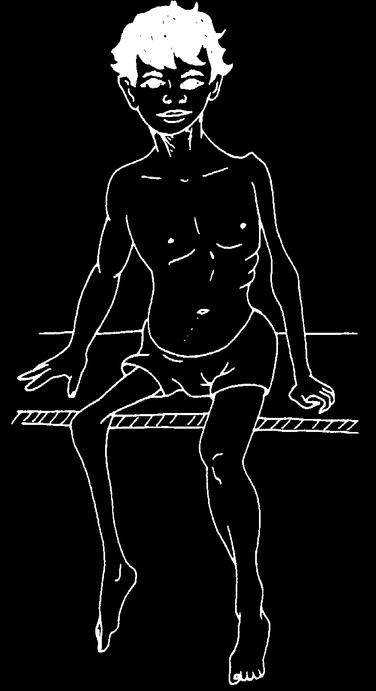
If you suspect that a child has diphtheria:
♦ Put him to bed in a room separate from other persons.
♦ Get medical help quickly. There is special antitoxin for diphtheria.
♦ Give penicillin, 1 tablet of 400,000 units, 3 times a day for older children. Or give erythromycin (p. 354).
♦ Have him gargle warm water with a little salt.
♦ Have him breathe hot water vapors often or continually (p. 168).
♦ Have him sip liquids often, even if it hurts to swallow.
♦ If the child begins to choke and turn blue, try to remove the membrane from his throat using a cloth wrapped around your finger.
Diphtheria is a dangerous disease that can easily be prevented with the DPT vaccine. Be sure your children are vaccinated.
Infantile Paralysis (Polio, Poliomyelitis)
Polio is most common in children under 2. It is caused by a virus infection similar to a cold, often with fever, vomiting, diarrhea, and sore muscles. Usually the child gets completely well in a few days. But sometimes a part of the body becomes weak or paralyzed. Most often this happens to one or both legs. In time, the weak limb becomes thin and does not grow as fast as the other one.
Treatment:
Once the disease has begun, no medicine will correct the paralysis. (However, sometimes part or all of the lost strength slowly returns.) Antibiotics do not help. For early treatment, calm the pain with acetaminophen or ibuprofen and put hot soaks on painful muscles. Position the child to be comfortable and avoid contractures. Gently straighten his arms and legs so that the child lies as straight as possible.
Put cushions under his knees, if necessary to reduce pain, but try to keep his knees straight.
Prevention:
♦ Vaccination against polio is the best protection (see p. 147).
♦ Do not give injections of any medicine to a child if you think his signs of a cold or fever might be caused by the polio virus. Although it happens only rarely, the irritation caused by an injection could turn a mild case of polio without paralysis into a severe case, with paralysis. Never inject children with any medicine unless it is absolutely necessary.
♦ Breastfeed your baby as long as possible. Breast milk protects your baby against infections, including polio.
Vaccinate all children against polio.

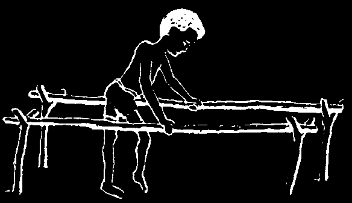
A child who has been paralyzed by polio should eat nutritious food and do exercises to strengthen remaining muscles.
Help the child learn to walk as best he can.
Fix 2 poles for support, like these, and later make him some crutches. Leg braces (calipers), crutches, and other aids may help the child to move better and may prevent deformities.
For more information on polio and other childhood disabilities, see Disabled Village Children, also published by Hesperian.
HOW TO MAKE SIMPLE CRUTCHES


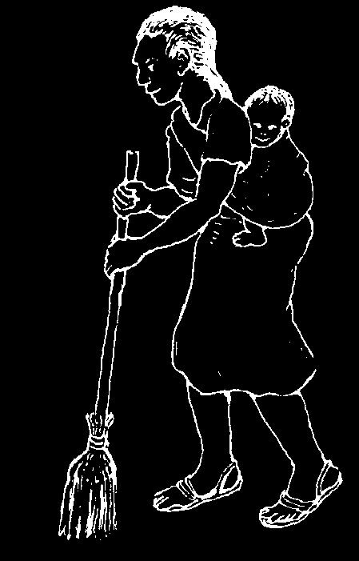
PROBLEMS CHILDREN ARE BORN WITH
Dislocated Hip
Some children are born with a dislocated hip—the leg has slipped out of its joint in the hip bone. Early care can prevent lasting harm and a limp. So babies should be checked for possible hip dislocation at about 10 days after birth.
1. Compare the 2 legs. If one hip is dislocated, that side may show:
The upper leg partly covers this part of the body on the dislocated side.
There are fewer folds here.
The leg seems shorter or turns out at a strange angle.
2. Hold both legs with the knees doubled, like this, and open them wide like this.
If one leg stops early or makes a jump or click when you open it wide, the hip is dislocated.
Treatment:
Carry the baby with her knees high and wide apart, like this:
Check the baby again in 2 weeks. If you still feel or hear a jump or click, see a health worker. A harness that holds the baby’s legs open for 2 weeks can prevent lasting harm.
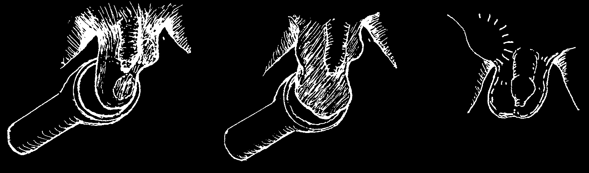
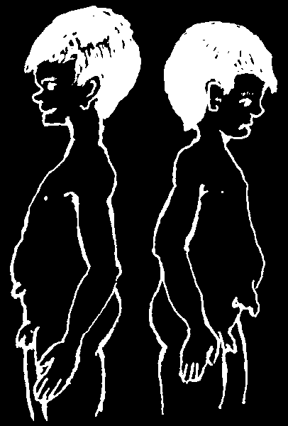

Umbilical Hernia (Belly Button that Sticks Out)
A belly button that sticks
Even a big umbilical out like this is no hernia like this one is not problem. No medicine dangerous and will often or treatment is needed.
go away by itself. If it is
Tying a tight cloth or still there after age 5, an
'belly band’ around the operation may be needed.
belly will not help.
Get medical advice.
A 'Swollen Testicle’ (Hydrocele or Hernia)
If a baby’s scrotum, or bag that holds his testicles, is swollen on one side, this is usually because it is filled with liquid (a hydrocele) or because a loop of gut has slipped into it (a hernia).
To find out which is the cause, shine a light through the swelling.
If light shines through easily,
If light does not shine through,
Sometimes the hernia it is probably a hydrocele.
and if the swelling gets bigger causes a swelling here when the baby coughs or cries, in either a boy it is a hernia.
or a girl.
You can tell this from a swollen lymph node
A hydrocele usually goes away A hernia needs surgery
(p. 88) because the in time, without treatment. If
(see p. 177).
hernia swells when the it lasts more than a year, get baby cries or is held medical advice.
upright and disappears when he lies quietly.

MENTALLY SLOW, DEAF, OR DEFORMED CHILDREN
Sometimes parents will have a child who is born deaf, mentally slow (retarded), or with birth defects (something wrong with part of his body). Often no reason can be found. No one should be blamed. Often it just seems to happen by chance.
However, certain things greatly increase the chance of birth defects. A baby is less likely to have something wrong if parents take certain precautions.
1. Lack of nutritious food during pregnancy can cause mental slowness or birth defects in babies.
To have healthy babies, pregnant women must eat enough nutritious food
(see p. 110).
2. Lack of iodine in a pregnant woman’s diet can cause hypothyroidism (cretinism) in her baby. The baby’s face is puffy, and he looks dull. His skin and eyes may remain yellow (jaundiced) for a long time after he is born. His tongue hangs out, and his forehead may be hairy. He is weak, feeds poorly, cries little, and sleeps a lot. He is mentally slow, may be deaf, and usually has an umbilical hernia. He will begin to walk and talk later than normal babies.
To help prevent hypothyroidism, pregnant women should use iodized salt instead of ordinary salt (see p. 130).
If you suspect your baby may have hypothyroidism, take him to a health worker or doctor at once. The sooner he gets special medicine
(thyroid) the more normal he will be.
3. Smoking or drinking of alcoholic drinks during pregnancy
HYPOTHYROIDISM
causes babies to be born small or to have other problems (see p. 149). Do not drink or smoke—especially during pregnancy.
4. After age 35, there is more chance that a mother will have a child with defects.
Mongolism or Down disease, which looks somewhat like hypothyroidism, is more likely to occur in babies of older mothers.
It is wise to plan your family so as to have no more children after age 35
(see Chapter 20).
5. Many medicines can harm the baby developing inside a pregnant mother. Use as little medicine as possible during pregnancy—and only those known to be safe.
6. Living near factories or industrial farms can expose you to toxic chemicals that can cause birth defects. See A Community Guide to Environmental Health.
7. When parents are blood relatives (cousins, for instance), there is a higher chance that their children will have birth defects or mental slowness. Cross-eyes, extra fingers or toes, club feet, hare lip, and cleft palate are common defects.
To lower the chance of these and other problems, do not marry a close relative. And if you have more than one child with a birth defect, consider not having more children
(see Family Planning, Chapter 20).
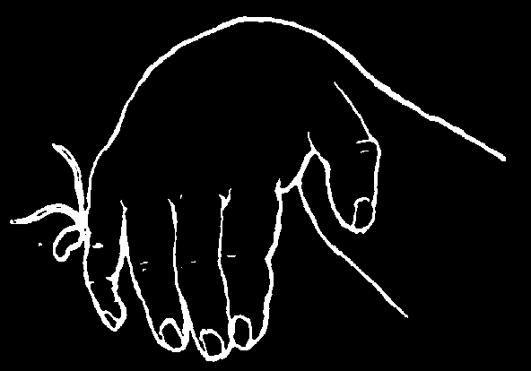

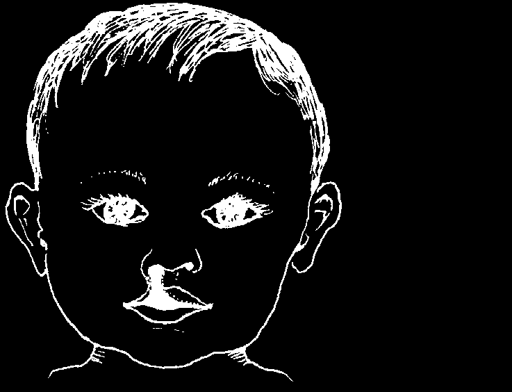
If your child is born with a birth defect, take him to a health center. Often something can be done.
♦ For cross-eyes, see p. 223.
♦ If an extra finger or toe is very small with no bone in it, tie a string around it very tightly.
It will dry up and fall off. If it is larger or has bone in it, either leave it or have it taken off by surgery.
♦ If a newborn baby’s feet are turned inward or have the wrong shape
(clubbed), try to bend them to normal shape. If you can do this easily, repeat this several times each day. The feet (or foot) should slowly grow to be normal.
If you cannot bend the baby’s feet to normal, take him at once to a health center where his feet can be strapped in a correct position or put in casts. For the best results, it is
CLUB FOOT
WITH CAST
important to do this within 2 days after birth.
♦ If a baby’s lip or the top of his mouth
(palate) is divided (cleft), he may have trouble breastfeeding and need to be fed with a spoon or dropper. With surgery, his lip and palate can be made to look almost normal. The best age for surgery is
HARE LIP
usually at 4 to 6 months for the lip,
AND and at 18 months for the palate.
CLEFT PALATE
7. Difficulties before and during birth sometimes result in brain damage that causes a child to be spastic or have seizures (fits). The chance of damage is greater if at birth the baby is slow to breathe, or if the midwife injected the mother with medicine to speed up the birth or to 'give force’ to the mother (p. 266) before the baby was born.
Be careful in your choice of a midwife—and do not let your midwife use medicines to speed up the birth.
For more information on children with birth defects, see Disabled Village Children,
Chapter 12.
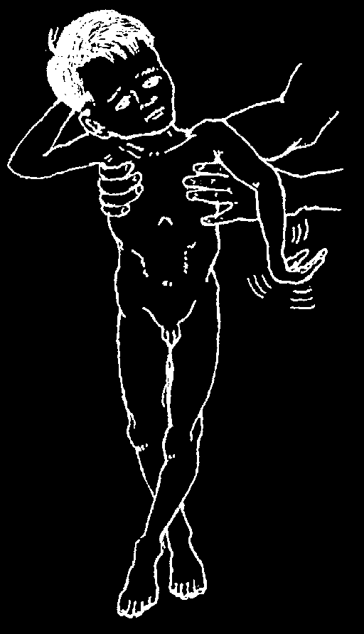

The Spastic Child (Cerebral Palsy)
A child who is spastic has tight, stiff muscles that he controls poorly. His face, neck, or body may twist, and his movements may be jerky. Often the tight muscles on the inside of his legs cause them to cross like scissors.
At birth the child may seem normal or perhaps floppy. The stiffness comes as he gets older. He may or may not be mentally slow.
The brain damage that causes cerebral palsy legs crossed often results from brain damage at birth (when like scissors the baby does not breathe soon enough) or from meningitis in early childhood.
There are no medicines that cure the brain damage that makes a child spastic. But the child needs special care. To help prevent tightening of muscles in the legs or in a foot, straighten and bend them very slowly several times a day.
Help the child learn to roll over, sit, stand—and if possible to walk (as on p. 314).
Encourage him to use both his mind and body as much as he can (see p. 322). Even if he has trouble with speaking he may have a good mind and be able to learn many skills if given a chance. Help him to help himself.
For more information on cerebral palsy, see Disabled Village Children, Chapter 9.
TO HELP PREVENT MENTAL RETARDATION OR BIRTH DEFECTS IN
HER CHILD, A WOMAN SHOULD DO THESE THINGS:
1. Do not have children with a cousin or other close relative.
2. Eat as well as possible during pregnancy: as much beans, fruit, vegetables, meat, eggs, and milk products as you can.
3. Use iodized salt instead of regular salt, especially during pregnancy.
4. Do not smoke or drink during pregnancy (see p. 149).
5. While pregnant, avoid medicines whenever possible—use only those known to be safe.
6. Do not work in factories which use a lot of chemicals and do not use strong chemical cleaners at home.
7. While pregnant, keep away from persons with German measles.
8. Be careful in the selection of a midwife—and do not let the midwife use medicines to speed up the birth or 'give strength’ to the mother (see p. 266).
9. Do not have more children if you have more than one child with the same birth defect (see Family Planning, p. 283).
10. Consider not having more children after age 35.
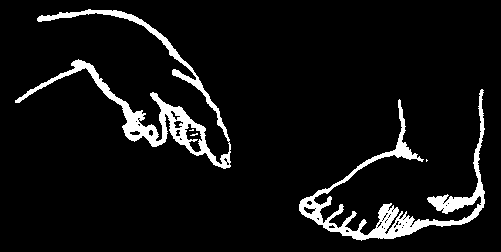
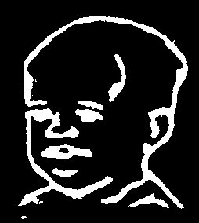
Slow Development in the First months of Life
Some children who are born healthy do not grow well. Their minds and bodies are slow to develop because they do not eat enough nutritious food. During the first few months of life the brain develops more rapidly than at any other time. For this reason the nutrition of the newborn is of great importance. Breast milk is the best food for a baby (see The Best Diet for Babies, p. 120).
Sickle Cell Disease (Sickle Cell Anemia)
Some children of African origin (or less often from India) are born with a
'weakness of the blood’, called sickle cell disease. This disease is passed on from the parents, who often do not know they carry the 'sickle cell’ trait. The baby may appear normal for 6 months, then signs may begin to appear.
Signs:
• fever and crying
• occasional swelling of the feet and fingers which lasts for 1 or 2 weeks
• big belly that feels hard at the top
• anemia, and sometimes yellow color in the eyes (jaundice)
• child frequently sick (cough, malaria, diarrhea)
• child grows slowly
• by age 2, bony bumps may appear on the head ('bossing’)
Malaria or other infections can bring on a 'sickle cell crisis’ with high fever and severe pain in the arms, legs, or belly. Anemia becomes much worse. Swellings on the bones may discharge pus. The child may die.
Treatment:
There is no way to change the weakness in the blood. Protect the child from malaria and other diseases and infections that can bring on a 'crisis’. Take the child for regular monthly visits to a health worker for an examination and medicines.
♦ Malaria. In areas where malaria is common, the child should have regular malaria medicines to help prevent the disease (see p. 363). Add to this a daily dose of folic acid (p. 392) to help build up the blood. Iron medicine (ferrous sulfate) is not usually necessary.
♦ Infections. The child should be vaccinated against measles, whooping cough, and tuberculosis at the earliest recommended time. If the child shows signs of fever, cough, diarrhea, passing urine too often, or pains in the belly, legs or arms, take him to a health worker as soon as possible. Antibiotics may be necessary. Give plenty of water to drink, and acetaminophen (p. 379) for pain in the bones.
♦ Avoid exposure to cold. Keep warm with a blanket at night when necessary.
Use a foam mattress if possible.